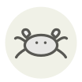

Crabe mou
Soft-shell crab
| Nom latin | Callinectes sapidus |
|---|---|
| Famille | Crustacés & coquillages |
| Origine | Baie de Chesapeake & côte atlantique américaine |
| Saison | mai – septembre |
| Goût | Sucré · Iodé · Noisette · Riche |
| Prix courant | 35–60 €/kg |
Ce que c’est
Callinectes sapidus se traduit par « beau nageur savoureux », et quelques heures par an ce nageur n’a plus d’armure du tout : les pêcheurs gardent en vivier les crabes dont la nageoire arrière montre un liseré rouge et les sortent à l’instant où l’ancienne carapace se fend. Douze heures de plus dans l’eau et la nouvelle coquille a durci, l’animal ne vaut plus qu’une fraction du prix — tout le métier tient dans cette surveillance.
En cuisine
Nettoyez-le cru : coupez la face derrière les yeux aux ciseaux, soulevez chaque pointe de carapace pour arracher les branchies grises, puis retirez le tablier sous le ventre. Séchez-le à fond avant la poêle — l’eau restée sous la carapace éclabousse violemment dans le gras chaud et fait fondre la croûte à la vapeur.
S’accorde avec
Beurre Citron Farine T55 Ail Persil Piment d’Espelette Tomate Ciboulette
De saison en même temps
Barbue Omble chevalier Tourteau Écrevisse Seiche Denté
Une erreur ici, ou un oubli ? Dites-le nous